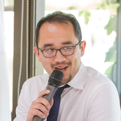
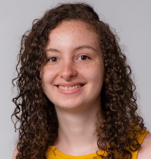

 Tirta Susilo | Group Leader
Tirta is senior lecturer in the School of Psychology at Victoria University of Wellington. He is also director of the Cognitive and Behavioural Neuroscience (CBNS) research program. Tirta did his PhD at the Australian National University and his postdoctoral training at Dartmouth College. Tirta’s research expertise is visual perception and neuroscience, with a special focus on face processing. [Homepage] [CV] [Google Scholar] [ORCID] [Email]
Sumaya Lamb | Staff Scientist
Maya is interested in many aspects of vision science and face processing. She has worked on a range of projects looking at the face-specificity of recognition deficits in prosopagnosia, the validity of frequency-based EEG response as a biomarker of face recognition skills, and differences in eye movements to upright and inverted faces. Maya has an MSc in cognitive neuroscience and a BSc in psychology and criminology.
 Morgan Reedy | MSc Student
Morgan is an MSc student working with Christel Devue to investigate the role of image variability in face recognition. She is also interested in eye movements to faces, and the relationship between face perception and spatial navigation. Morgan holds a BSc(Hons) in psychology.
 Ella Macaskill | MSc Student
Ella Macaskill | MSc Student
Ella is an MSc student interested in early visual mechanisms in face processing and prosopagnosia. Ella has worked in the lab as a CBNS rotation student, a summer scholar, and a research volunteer. Ella’s prior projects looked at individual differences in eye movements to natural scenes and the robustness of face recognition to image stretching. Ella holds a BA in psychology and education.
 Zoe Little | MSc Student
Zoe Little | MSc Student
Zoe is a summer scholar and MSc student working on multiple projects involving gaze processing, perceptual decision making, and rapid eye movements. Zoe was previously a CBNS rotation student and a research volunteer. In her prior studies, Zoe used psychophysics to examine the spatiotemporal aspects of direct gaze perception, and frequency-based EEG to explore a potential biomarker of face recognition abilities. Zoe holds a BSc in psychology and geography.
Max McDonald | Honours Student
Max is an honours student interested in comparing face recognition in natural vs forensic settings. Max was previously a SCIE306 student and research volunteer. Max has worked on unconscious visual processing of faces and individual differences in face detection across the visual space. Max holds a BSc in psychology and sociology.
 Jaiden Cancian | Honours Student (clinical)
Jaiden Cancian | Honours Student (clinical)
Jaiden is an honours student in the clinical program. Jaiden was previously a SCIE306 student and a research volunteer, and he has worked on unconscious face processing and laterality effects in face recognition. Jaiden holds a BSc in psychology and criminology.
Chelsea Smith | Research Assistant
Chelsea is working on several experiments looking at various visual functions in developmental prosopagnosia, focusing on colour vision, biological motion perception, and spatial navigation. Chelsea is also interested in developing sensitive psychophysical measures that can isolate perceptual sensitivity to facial information. Chelsea holds a BSc in Neuroscience from McGill University.
Stephanie Huang | Research Volunteer
Steph is an MSc student in behavioural genetics working with Bart Ellenbroek. Steph is interested in many aspects of visual perception and face processing, and she completed two independent studies in the lab (PSYC440/SCIE306). Steph has worked on biomotion perception, face detection in prosopagnosia, and eye movements to upright and inverted faces. Steph holds a BSc in psychology and molecular biology.
 Liam Crowley | Research Volunteer
Liam Crowley | Research Volunteer
Liam is interested in pursuing research in visual perception and neuroscience. He is currently exploring potential experiments on holistic processing of faces, and is helping Zoe with her work on gaze perception. Liam is a third year student majoring in psychology and philosophy.
- © Untitled
- Design: HTML5 UP